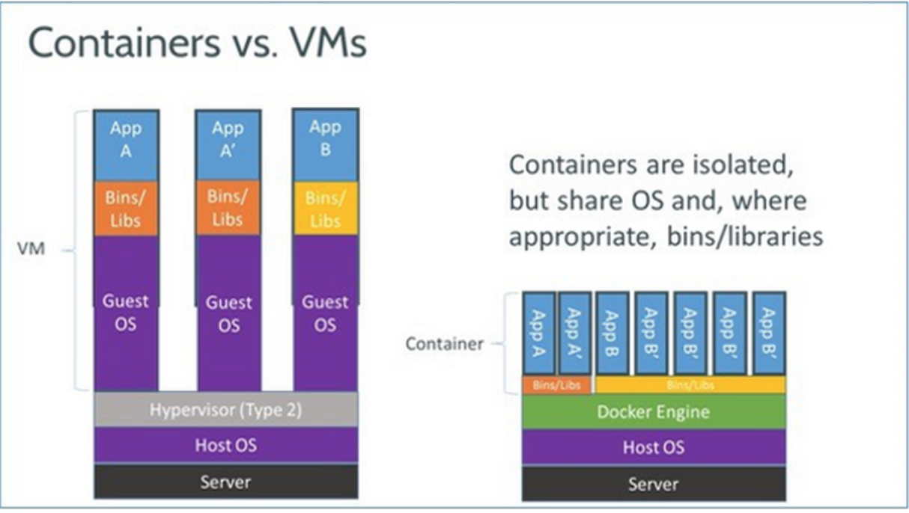

Docker is an open source tool designed to make it easier to create, deploy, and run applications by using containers (opensource.com/docker). Docker's containers are very similar to a Virtual Machine (VM), except it shares the Host operating system. Whereas VM has its own operating system, bins, and libraries. Containers are isolated but share operating systems and depending on the project, might share bins or libraries (zhnet.com). Below is a diagram showing the difference between containers and VM. 
Nginx is open source software for web serving, reverse proxying, caching, load balancing, media streaming, and more (nginx.com/glossary). NGINX is a high performance, highly scalable, highly available web server, reverse proxy server, and web accelerator (combining the features of an HTTP load balancer, content cache, and more). A web server accepts and fulfill requests from clients for static content from a website (HTML pages, files, images, video, and so on) (nginx.com/application-server). The client is almost always a browser or mobile application and the request takes the form of a Hypertext Transfer Protocol (HTTP) message, as does the web server's response.
A virtual machine (VM) is a computer file, typically called an image, that behaves like an actual computer. Each virtual machine provides its own virtual hardware, including CPUs, memory, hard drives, network interfaces, and other devices. The virtual hardware is then then mapped to the real hardware on the physical machine which saves costs by reducing the need for physical hardware systems along with the associated maintenance costs that go with it, plus reduces power and cooling demand. (microsoft.com/virtual-machine)
DigitalOcean is a cloud computing vendor that offers an Infrastructure as a Service (IaaS) platform for software developers. Cloud computing is a general term for delivery of hosted services over the internet (techtarget.com/cloud-computing). To deploy DigitalOcean's Infrastructure as a Service (IaaS) environment, developers launch a private virtual machine (VM) instance, which DigitalOcean calls a "droplet". Developers are able to choose the size of their droplet, which operating system it will use, and where the data center will be located (techtarget.com/DigitalOcean).